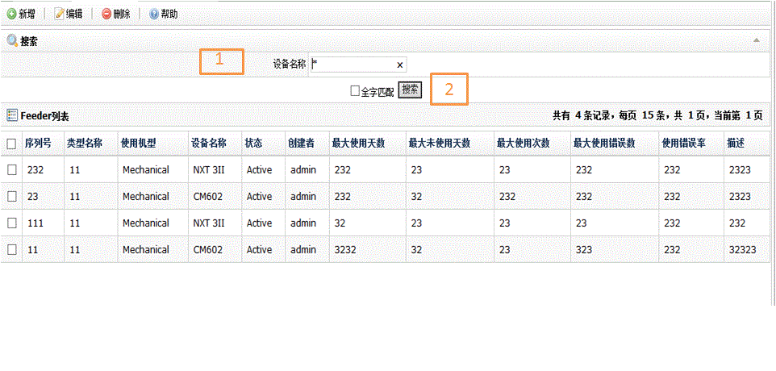
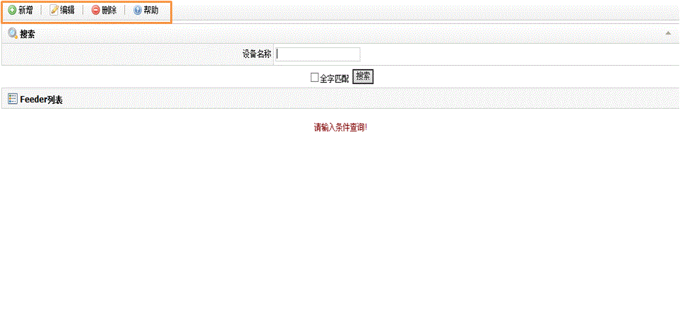
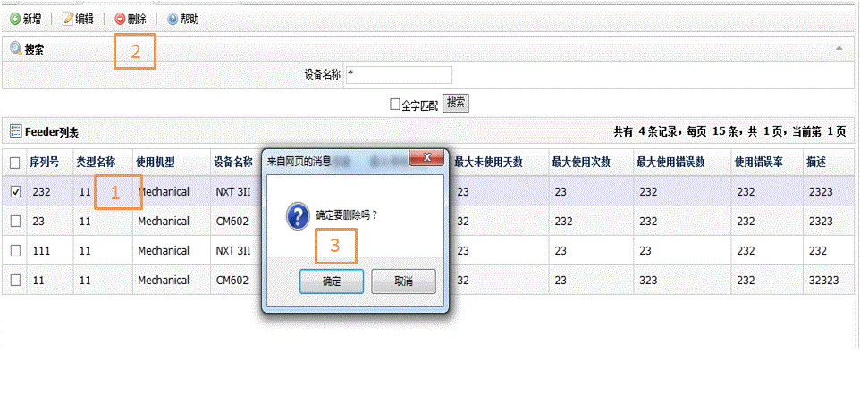

| 字段名 | 描述 |
| 序列号 | Feeder序列号 |
| 类型名称 | Feeder所属类型 |
| 使用机型 | Feeder机器类型： 1.Mechanical 2.Motorize |
| 设备名称 | 设备名称 |
| 状态 | Feeder状态： 1.Active 2.Created 3.Deleted 4.InActive 5.Issued 6.Maintenance 7.MaterialUnitMapped 8.OfflineMapped 9.OnlineMapped 10.Returned |
| 创建者 | Feeder创建者 |
| 最大使用天数 | Feeder最多连续工作时间 |
| 最大未使用天数 | Feeder最多连续未工作时间 |
| 最大使用次数 | Feeder最多使用次数 |
| 最大使用错误数 | Feeder错误数达到这个最大值，要进行维护 |
| 使用错误率 | Feeder使用错误率 |
| 描述 | Feeder信息描述 |


